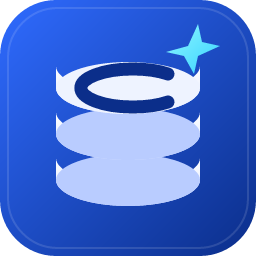

A fast, focused, open-source desktop SQL client for SQL Server, Azure SQL and Microsoft Fabric. The spiritual successor to Azure Data Studio, written in Rust.
Windows: the installer needs no admin rights; the zip is portable. Linux: .deb for Debian/Ubuntu, .AppImage or the tarball elsewhere. macOS (Apple Silicon): the app is not yet notarized, so on first launch right-click the app and choose Open. Windows builds include a software renderer (Mesa llvmpipe) for VMs and RDP sessions without a GPU.
Groups, colors, SQL login, Windows integrated auth, and Entra ID (interactive, device code, Azure CLI, service principal). Imports Azure Data Studio connections.
Fabric Warehouse, SQL analytics endpoints and SQL database in Fabric connect out of the box, including the routing and protocol quirks other drivers miss.
T-SQL highlighting and completion, streaming results grid with a row cap and fetch-more, sort and filter, cell viewer, messages with clickable errors.
CSV, Excel, JSON, XML, Markdown, plus Parquet, Arrow and Delta Lake tables — from a result set, or streamed straight from the query with Run to File, to a local file or a OneLake lakehouse.
Estimated and actual plan graphs with properties and top operators, and .sqlplan files open directly.
A single native binary. Command palette, ADS keyboard shortcuts, history, hot exit, and an agent channel so tooling can drive the UI.